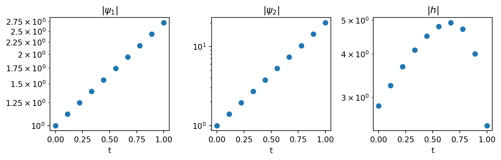
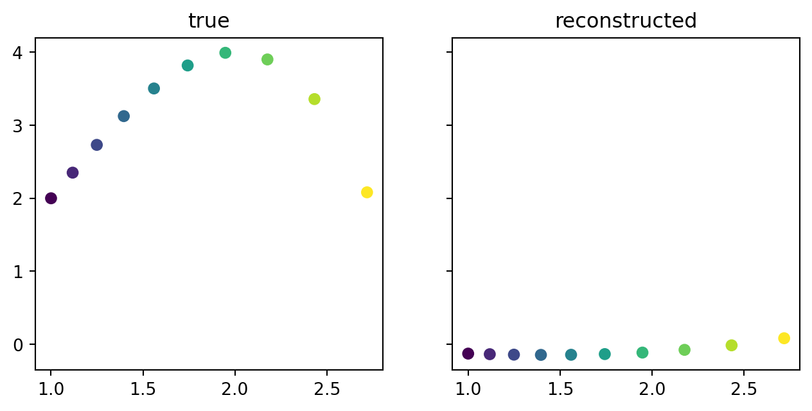
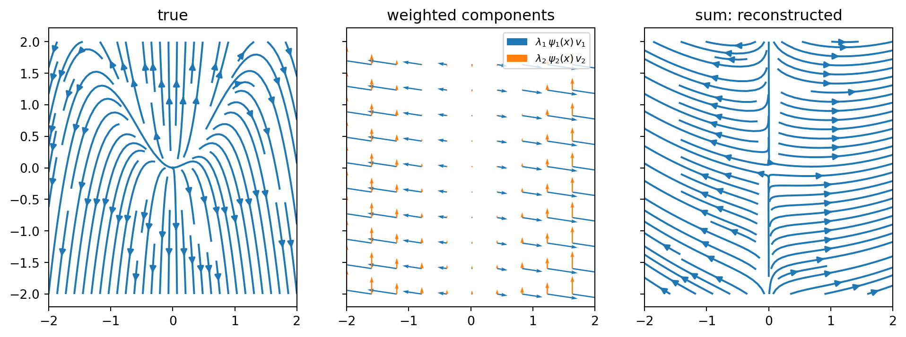
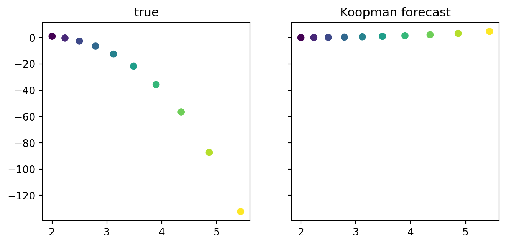
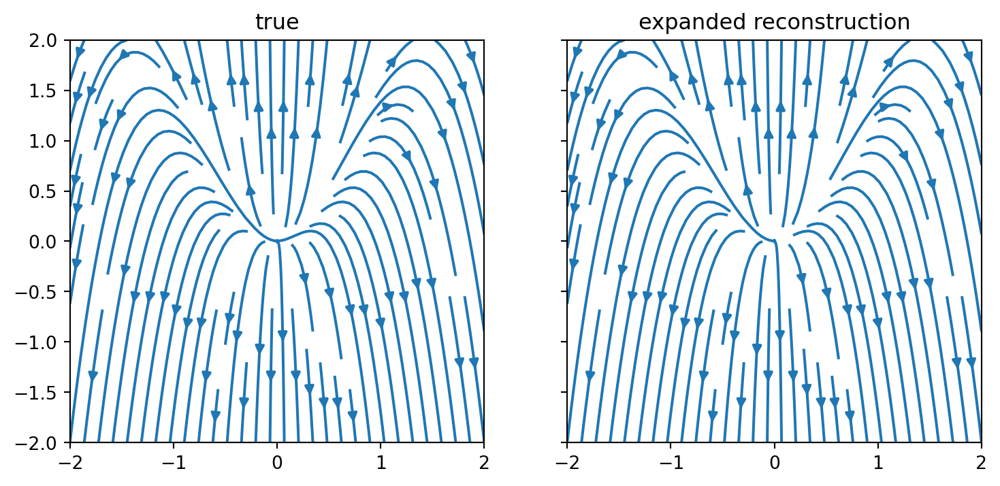
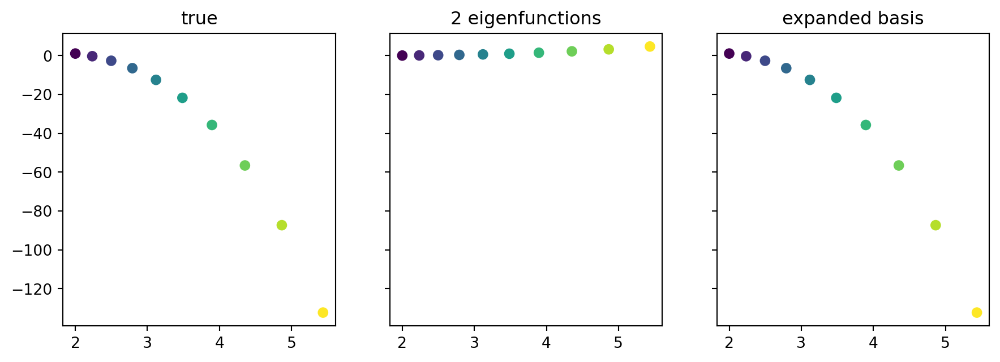

Show imports
import torch
from torchdiffeq import odeint
from dataclasses import dataclass
import matplotlib.pyplot as pltTesting, decomposing and forecasting a nonlinear system with closed-form eigenfunctions
Etienne Meunier
August 3, 2026
In the introduction we applied the Koopman decomposition to a scalar linear ODE. Here we do the full loop — test eigenfunctions, decompose an observable, forecast — on a genuinely nonlinear system, chosen because its eigenfunctions have a closed form:
\[ \frac{d\Phi(t)}{dt} = S(\Phi(t)), \qquad S(x_1, x_2) = \begin{pmatrix} \mu\, x_1 \\ \klam\, (x_2 - x_1^2) \end{pmatrix} \]
The \(x_1^2\) term makes the flow nonlinear. Let’s simulate a ground-truth trajectory:
@dataclass
class FixedPoint:
mu: float
lbd: float
def f(self, t, x):
"""x (..., 2) -> dx/dt (..., 2)"""
x1, x2 = x[..., 0], x[..., 1]
xp1 = self.mu * x1
xp2 = self.lbd * (x2 - x1**2)
return torch.stack([xp1, xp2], dim=-1)
fp = FixedPoint(mu=1.0, lbd=3.0)
x0 = torch.tensor([1., 2.])
t_int = torch.linspace(0, 1, 10)
x_gt = odeint(fp.f, x0, t_int)We have two equivalent criteria to check whether a function \(\kpsi_j : \mathbb{R}^p \to \mathbb{R}\) is an eigenfunction:
Instantaneous — requires knowing the dynamics \(S\):
\[ \frac{d \kpsi_j(x(t))}{dt} = \nabla_x \kpsi_j(x(t)) \cdot S(x(t)) = \klam_j\, \kpsi_j(x(t)) \]
Integrated — only needs observed trajectories:
\[ \kpsi_j(x(t)) = e^{\klam_j t}\, \kpsi_j(x(0)) \]
Depending on whether we have access to the dynamics or only to data, we use one or the other criterion. Here we work from the simulated sequence, so we use the integrated one.
From the integrated criterion, the per-timepoint estimates
\[ \frac{\log \big(\kpsi_j(x(t)) / \kpsi_j(x(0))\big)}{t} \]
should all agree on a single constant \(\klam_j\) — equivalently, \(|\kpsi_j(x(t))|\) should trace a straight line on a log scale.
As in the introduction, let’s try a few candidates. With \(\gamma = \klam - 2\mu\) :
\[ \kpsi_1(x) = x_1, \qquad \kpsi_2(x) = x_2 - \frac{\klam}{\gamma} x_1^2, \qquad h(x) = \sin(x_1) + x_2 \]
gamma = fp.lbd - 2 * fp.mu
psi_1 = lambda x: x[..., 0]
psi_2 = lambda x: x[..., 1] - (fp.lbd / gamma) * x[..., 0]**2
h = lambda x: torch.sin(x[..., 0]) + x[..., 1]
for name, p in {"psi_1": psi_1, "psi_2": psi_2, "h": h}.items():
px = p(x_gt)
print(name, torch.round(torch.log(px[1:] / px[0]) / t_int[1:], decimals=2))psi_1 tensor([1., 1., 1., 1., 1., 1., 1., 1., 1.])
psi_2 tensor([3., 3., 3., 3., 3., 3., 3., 3., 3.])
h tensor([ 1.2100, 1.1600, 1.1100, 1.0400, 0.9500, 0.8200, 0.6500, 0.3900,
-0.1300])
The estimates for \(\kpsi_1\) and \(\kpsi_2\) agree on a constant — straight lines in log space — so both are eigenfunctions, and the test even reads off their eigenvalues, \(\mu\) and \(\klam\). The estimates for \(h\) drift instead:
| Candidate | Eigenvalue | Eigenfunction? |
|---|---|---|
| \(\kpsi_1(x) = x_1\) | \(\mu\) | ✓ |
| \(\kpsi_2(x) = x_2 - \frac{\klam}{\gamma} x_1^2\) | \(\klam\) | ✓ |
| \(h(x) = \sin(x_1) + x_2\) | — | ✗ |
Take the ansatz \(\kpsi_2(x) = x_2 - c\, x_1^2\) and apply the instantaneous criterion (chain rule along the flow):
\[ \frac{d\kpsi_2}{dt} = \dot{x}_2 - 2c\, x_1 \dot{x}_1 = \klam x_2 - (\klam + 2c\mu)\, x_1^2 \]
Requiring \(\frac{d\kpsi_2}{dt} = \klam\, \kpsi_2 = \klam x_2 - \klam c\, x_1^2\) gives \(c = \klam / (\klam - 2\mu) = \klam/\gamma\).
Beyond testing guesses one by one, products of validated eigenfunctions come for free. This is the eigenlattice property: any product of eigenfunctions is again an eigenfunction, with eigenvalues summing,
\[ \frac{d (\kpsi_a \kpsi_b)}{dt} = \dot{\kpsi_a} \kpsi_b + \kpsi_a \dot{\kpsi_b} = (\klam_a + \klam_b)\, \kpsi_a \kpsi_b \]
so for instance \(\kpsi_1^2\) is an eigenfunction with eigenvalue \(2\mu\). We will not use it for now and only keep \(\kpsi_1\) and \(\kpsi_2\).
Here we choose our observable to be the state itself, \(\kgb(x) = x\), and decompose it in the eigenbasis as a single matrix–vector product:
\[ \kgb(x) \approx \kV\, \kPsib(x) \]
with \(\kPsib(x) = [\kpsi_1(x),\, \kpsi_2(x)]^T\) the stacked eigenfunctions and \(\kV \in \mathbb{R}^{2 \times 2}\) the coefficient matrix.
Each eigenfunction outputs a scalar, \(\kpsi_j : \mathbb{R}^2 \to \mathbb{R}\), while the observable we want to reconstruct here is a vector. So we actually pick one scalar observable per coordinate,
\[ \big[\kg_1(x),\; \kg_2(x)\big] = [x_1,\; x_2] \]
and decompose each of them separately in the same eigenbasis, each with its own coefficients:
\[ \kg_i(x) \approx \sum_{j=1}^{2} \kv_{ij}\, \kpsi_j(x), \qquad i \in \{1, 2\} \]
Writing vectors in bold (as columns), the two sums collapse into one by grouping the coefficients of each eigenfunction into a vector \(\kvb_j = [\kv_{1j},\, \kv_{2j}]^T \in \mathbb{R}^2\):
\[ \kgb(x) = \begin{pmatrix} \kg_1(x) \\ \kg_2(x) \end{pmatrix} \approx \sum_{j=1}^{2} \kpsi_j(x)\, \kvb_j \]
Stacking the eigenfunctions into \(\kPsib(x)\) and the \(\kvb_j\) as the columns of \(\kV = \big[\kvb_1 \;\, \kvb_2\big]\) gives the matrix form above.
The matrix \(\kV\) is obtained by least squares on a few sample points (lstsq wants samples as rows, hence the two transposes):

With the product eigenfunction \(\kpsi_1^2\) included the identity observable is exactly in the span: \(x_1 = \kpsi_1\) and \(x_2 = \kpsi_2 + \frac{\klam}{\gamma} \kpsi_1^2\). Keeping only two eigenfunctions makes the reconstruction a least-squares approximation.
Stacking the eigenvalues in a diagonal matrix \(\kLam = \mathrm{diag}(\klam_1, \klam_2)\), the eigenfunction property says that the lifted coordinates follow a linear system in the familiar form:
\[ \frac{d \kPsib(x(t))}{dt} = \kLam\, \kPsib(x(t)) \]
Combining it with the decomposition \(\kgb(x) \approx \kV \kPsib(x)\) gives
\[ \frac{d\kgb(x)}{dt} \approx \kV \kLam\, \kPsib(x) = \sum_j \klam_j\, \kpsi_j(x)\, \kvb_j \]
and since \(\kgb(x) = x\) here, the left-hand side is the vector field itself. Read as the sum, the reconstruction is a weighted sum of elementary vector fields: each eigenfunction contributes a field \(\klam_j\, \kpsi_j(x)\, \kvb_j\) whose direction is fixed by \(\kvb_j\) and whose intensity is modulated by \(\klam_j \kpsi_j(x)\). The middle panel below shows these two component fields, and summing them (right) reconstructs the flow to compare with the true one (left):
x_grid = torch.stack(torch.meshgrid(torch.linspace(-2, 2, 100),
torch.linspace(-2, 2, 100), indexing='xy'), dim=-1)
f_grid = fp.f(0, x_grid).numpy()
# each term of the sum: lambda_j psi_j(x) v_j -> (J, 2, H, W)
f_comps = torch.stack([l * p[None] * v[:, None, None]
for l, p, v in zip(lambdas, Psi(x_grid), V.T)])
fa_grid = f_comps.sum(0).numpy() # V Lambda Psi(x): the component fields summedxg = x_grid.numpy()
sub = (slice(None, None, 10),) * 2
scale = 5 * float(f_comps.norm(dim=1).max()) # shared scale so arrow lengths are comparable
fig, axs = plt.subplots(1, 3, figsize=(12, 4), sharex=True, sharey=True)
axs[0].streamplot(xg[..., 0], xg[..., 1], f_grid[..., 0], f_grid[..., 1])
for j, fc in enumerate(f_comps):
axs[1].quiver(xg[sub][..., 0], xg[sub][..., 1], fc[0][sub], fc[1][sub],
color=f"C{j}", scale=scale, width=5e-3,
label=rf"$\lambda_{j+1}\,\psi_{j+1}(x)\,v_{j+1}$")
axs[1].legend(loc="upper right", fontsize=8)
axs[2].streamplot(xg[..., 0], xg[..., 1], *fa_grid)
axs[0].set_title("true")
axs[1].set_title("weighted components")
axs[2].set_title("sum: reconstructed")
plt.show()
Starting from an initial condition we project into the eigenspace using \(\kPsib\), propagate each coordinate with its own exponential, and map back with \(\kV\):
\[ x(t) \approx \kV\, e^{\kLam t}\, \kPsib(x_0) = \sum_j e^{\klam_j t}\, \kpsi_j(x_0)\, \kvb_j \]
where \(e^{\kLam t} = \mathrm{diag}(e^{\klam_1 t}, e^{\klam_2 t})\) since \(\kLam\) is diagonal.

The nonlinear flow has been replaced by two independent exponentials plus a linear map — the whole trajectory follows from the initial condition. But the forecast inherits the approximation error of the decomposition: with only two eigenfunctions the identity observable is not exactly in the span.
Here is where the eigenlattice property pays off: we don’t need to hunt for new candidates, since products of the eigenfunctions we already validated are eigenfunctions too, with eigenvalues summing. Taking all products of up to two factors amounts to a polynomial expansion of the basis,
\[ \{\kpsi_1,\, \kpsi_2\} \longrightarrow \{\kpsi_1,\, \kpsi_2,\, \kpsi_1^2,\, \kpsi_1 \kpsi_2,\, \kpsi_2^2\} \]
with eigenvalues \(\{\mu,\, \klam,\, 2\mu,\, \mu + \klam,\, 2\klam\}\). We then redo the least-squares decomposition in the expanded basis:
from itertools import combinations_with_replacement
def expansion(Psi, lambdas, order):
"""All products of up to `order` eigenfunctions; eigenvalues sum."""
combos = [list(c) for k in range(1, order + 1)
for c in combinations_with_replacement(range(len(lambdas)), k)]
Psi_e = lambda x: torch.stack([Psi(x)[c].prod(dim=0) for c in combos], dim=0)
lambdas_e = torch.stack([lambdas[c].sum() for c in combos])
return Psi_e, lambdas_e
Psi_e, lambdas_e = expansion(Psi, lambdas, 2)
V_e = torch.linalg.lstsq(Psi_e(xs).T, xs).solution.TSince \(x_2 = \kpsi_2 + \frac{\klam}{\gamma} \kpsi_1^2\), the identity observable is now exactly in the span. The reconstructed vector field and the forecast follow exactly as before, only with the expanded basis:


The trajectories improve as we add product eigenfunctions to the decomposition — and since the expansion puts the observable exactly in the span here, the forecast now matches the true flow.
---
title: "Koopman Eigenfunctions — A Nonlinear Example"
subtitle: "Testing, decomposing and forecasting a nonlinear system with closed-form eigenfunctions"
author: "Etienne Meunier"
date: today
format:
html:
number-sections: true
code-fold: show
code-tools: true
include-in-header:
text: |
<script>
window.MathJax = {
tex: {
macros: {
kpsi: ["\\textcolor{#1f77b4}{\\psi}", 0],
kPsi: ["\\textcolor{#1f77b4}{\\Psi}", 0],
klam: ["\\textcolor{#ff7f0e}{\\lambda}", 0],
kLam: ["\\textcolor{#ff7f0e}{\\Lambda}", 0],
kv: ["\\textcolor{#9467bd}{v}", 0],
kvb: ["\\textcolor{#9467bd}{\\mathbf{v}}", 0],
kV: ["\\textcolor{#9467bd}{V}", 0],
kg: ["\\textcolor{#2ca02c}{g}", 0],
kgb: ["\\textcolor{#2ca02c}{\\mathbf{g}}", 0],
kPsib: ["\\textcolor{#1f77b4}{\\boldsymbol{\\Psi}}", 0]
}
}
};
</script>
---
# Introduction
In the [introduction](koopman-introduction.qmd) we applied the Koopman decomposition to a scalar *linear* ODE. Here we do the full loop — test eigenfunctions, decompose an observable, forecast — on a genuinely nonlinear system, chosen because its eigenfunctions have a closed form:
$$
\frac{d\Phi(t)}{dt} = S(\Phi(t)), \qquad
S(x_1, x_2) =
\begin{pmatrix}
\mu\, x_1 \\
\klam\, (x_2 - x_1^2)
\end{pmatrix}
$$
The $x_1^2$ term makes the flow nonlinear. Let's simulate a ground-truth trajectory:
```{python}
#| label: imports
#| code-fold: true
#| code-summary: "Show imports"
import torch
from torchdiffeq import odeint
from dataclasses import dataclass
import matplotlib.pyplot as plt
```
```{python}
#| label: system
@dataclass
class FixedPoint:
mu: float
lbd: float
def f(self, t, x):
"""x (..., 2) -> dx/dt (..., 2)"""
x1, x2 = x[..., 0], x[..., 1]
xp1 = self.mu * x1
xp2 = self.lbd * (x2 - x1**2)
return torch.stack([xp1, xp2], dim=-1)
fp = FixedPoint(mu=1.0, lbd=3.0)
x0 = torch.tensor([1., 2.])
t_int = torch.linspace(0, 1, 10)
x_gt = odeint(fp.f, x0, t_int)
```
```{python}
#| label: fig-trajectory
#| fig-cap: "Ground-truth trajectory in state space, colored by time."
#| code-fold: true
#| code-summary: "Show plotting code"
plt.figure(figsize=(5, 4))
plt.scatter(*x_gt.T, c=t_int)
plt.xlabel(r"$x_1$")
plt.ylabel(r"$x_2$")
plt.colorbar(label="t")
plt.show()
```
# Testing candidate eigenfunctions
We have two equivalent criteria to check whether a function $\kpsi_j : \mathbb{R}^p \to \mathbb{R}$ is an eigenfunction:
::: {.callout-note icon=false}
#### Two criteria to test an eigenfunction
**Instantaneous** — requires knowing the dynamics $S$:
$$
\frac{d \kpsi_j(x(t))}{dt} = \nabla_x \kpsi_j(x(t)) \cdot S(x(t)) = \klam_j\, \kpsi_j(x(t))
$$
**Integrated** — only needs observed trajectories:
$$
\kpsi_j(x(t)) = e^{\klam_j t}\, \kpsi_j(x(0))
$$
:::
Depending on whether we have access to the dynamics or only to data, we use one or the other criterion. Here we work from the simulated sequence, so we use the integrated one.
::: {.callout-note collapse="true"}
#### A practical testing criterion
From the integrated criterion, the per-timepoint estimates
$$
\frac{\log \big(\kpsi_j(x(t)) / \kpsi_j(x(0))\big)}{t}
$$
should all agree on a single constant $\klam_j$ — equivalently, $|\kpsi_j(x(t))|$ should trace a straight line on a log scale.
:::
As in the [introduction](koopman-introduction.qmd), let's try a few candidates. With $\gamma = \klam - 2\mu$ :
$$
\kpsi_1(x) = x_1, \qquad
\kpsi_2(x) = x_2 - \frac{\klam}{\gamma} x_1^2, \qquad
h(x) = \sin(x_1) + x_2
$$
```{python}
#| label: eigentest
gamma = fp.lbd - 2 * fp.mu
psi_1 = lambda x: x[..., 0]
psi_2 = lambda x: x[..., 1] - (fp.lbd / gamma) * x[..., 0]**2
h = lambda x: torch.sin(x[..., 0]) + x[..., 1]
for name, p in {"psi_1": psi_1, "psi_2": psi_2, "h": h}.items():
px = p(x_gt)
print(name, torch.round(torch.log(px[1:] / px[0]) / t_int[1:], decimals=2))
```
```{python}
#| label: fig-eigenlines
#| fig-cap: "Each candidate evaluated along the trajectory, log scale: a straight line is equivalent to the constancy test above. $\\psi_1$ and $\\psi_2$ pass, $h$ bends."
#| code-fold: true
#| code-summary: "Show plotting code"
fig, axs = plt.subplots(1, 3, figsize=(9, 3), sharex=True)
for ax, p, name in zip(axs, [psi_1, psi_2, h],
[r"$|\psi_1|$", r"$|\psi_2|$", r"$|h|$"]):
ax.scatter(t_int, p(x_gt).abs())
ax.set_yscale("log")
ax.set_title(name)
ax.set_xlabel("t")
fig.tight_layout()
plt.show()
```
The estimates for $\kpsi_1$ and $\kpsi_2$ agree on a constant — straight lines in log space — so both are eigenfunctions, and the test even reads off their eigenvalues, $\mu$ and $\klam$. The estimates for $h$ drift instead:
| Candidate | Eigenvalue | Eigenfunction? |
|---|:---:|:---:|
| $\kpsi_1(x) = x_1$ | $\mu$ | ✓ |
| $\kpsi_2(x) = x_2 - \frac{\klam}{\gamma} x_1^2$ | $\klam$ | ✓ |
| $h(x) = \sin(x_1) + x_2$ | — | ✗ |
::: {.callout-note collapse="true"}
#### Where does $\kpsi_2$ come from ?
Take the ansatz $\kpsi_2(x) = x_2 - c\, x_1^2$ and apply the *instantaneous* criterion (chain rule along the flow):
$$
\frac{d\kpsi_2}{dt} = \dot{x}_2 - 2c\, x_1 \dot{x}_1
= \klam x_2 - (\klam + 2c\mu)\, x_1^2
$$
Requiring $\frac{d\kpsi_2}{dt} = \klam\, \kpsi_2 = \klam x_2 - \klam c\, x_1^2$ gives $c = \klam / (\klam - 2\mu) = \klam/\gamma$.
:::
Beyond testing guesses one by one, products of validated eigenfunctions come for free. This is the **eigenlattice property**: any product of eigenfunctions is again an eigenfunction, with eigenvalues summing,
$$
\frac{d (\kpsi_a \kpsi_b)}{dt} = \dot{\kpsi_a} \kpsi_b + \kpsi_a \dot{\kpsi_b} = (\klam_a + \klam_b)\, \kpsi_a \kpsi_b
$$
so for instance $\kpsi_1^2$ is an eigenfunction with eigenvalue $2\mu$. We will not use it for now and only keep $\kpsi_1$ and $\kpsi_2$.
# Decomposition
Here we choose our observable to be the state itself, $\kgb(x) = x$, and decompose it in the eigenbasis as a single matrix–vector product:
$$
\kgb(x) \approx \kV\, \kPsib(x)
$$
with $\kPsib(x) = [\kpsi_1(x),\, \kpsi_2(x)]^T$ the stacked eigenfunctions and $\kV \in \mathbb{R}^{2 \times 2}$ the coefficient matrix.
::: {.callout-note collapse="true"}
#### How did we get there ?
Each eigenfunction outputs a *scalar*, $\kpsi_j : \mathbb{R}^2 \to \mathbb{R}$, while the observable we want to reconstruct here is a vector. So we actually pick one scalar observable per coordinate,
$$
\big[\kg_1(x),\; \kg_2(x)\big] = [x_1,\; x_2]
$$
and decompose each of them separately in the *same* eigenbasis, each with its own coefficients:
$$
\kg_i(x) \approx \sum_{j=1}^{2} \kv_{ij}\, \kpsi_j(x), \qquad i \in \{1, 2\}
$$
Writing vectors in bold (as columns), the two sums collapse into one by grouping the coefficients of each eigenfunction into a vector $\kvb_j = [\kv_{1j},\, \kv_{2j}]^T \in \mathbb{R}^2$:
$$
\kgb(x) = \begin{pmatrix} \kg_1(x) \\ \kg_2(x) \end{pmatrix} \approx \sum_{j=1}^{2} \kpsi_j(x)\, \kvb_j
$$
Stacking the eigenfunctions into $\kPsib(x)$ and the $\kvb_j$ as the columns of $\kV = \big[\kvb_1 \;\, \kvb_2\big]$ gives the matrix form above.
:::
The matrix $\kV$ is obtained by least squares on a few sample points (`lstsq` wants samples as rows, hence the two transposes):
```{python}
#| label: decomposition
Psi = lambda x: torch.stack([psi_1(x), psi_2(x)], dim=0) # (J, ...): eigenfunctions stacked first
lambdas = torch.tensor([fp.mu, fp.lbd])
xs = torch.randn((10, 2))
V = torch.linalg.lstsq(Psi(xs).T, xs).solution.T # (2, J): g(x) = V Psi(x)
```
```{python}
#| label: fig-reconstruction
#| fig-cap: "True trajectory (left) vs. its reconstruction through the eigenbasis, $V \\Psi(x)$ (right)."
#| code-fold: true
#| code-summary: "Show plotting code"
fig, axs = plt.subplots(1, 2, figsize=(8, 3.5), sharex=True, sharey=True)
axs[0].scatter(*x_gt.T, c=t_int)
axs[1].scatter(*(V @ Psi(x_gt)), c=t_int)
axs[0].set_title("true")
axs[1].set_title("reconstructed")
plt.show()
```
::: {.callout-note icon=false appearance="simple"}
With the product eigenfunction $\kpsi_1^2$ included the identity observable is *exactly* in the span: $x_1 = \kpsi_1$ and $x_2 = \kpsi_2 + \frac{\klam}{\gamma} \kpsi_1^2$. Keeping only two eigenfunctions makes the reconstruction a least-squares approximation.
:::
# Reconstructing the vector field
Stacking the eigenvalues in a diagonal matrix $\kLam = \mathrm{diag}(\klam_1, \klam_2)$, the eigenfunction property says that the lifted coordinates follow a *linear system* in the familiar form:
$$
\frac{d \kPsib(x(t))}{dt} = \kLam\, \kPsib(x(t))
$$
Combining it with the decomposition $\kgb(x) \approx \kV \kPsib(x)$ gives
$$
\frac{d\kgb(x)}{dt} \approx \kV \kLam\, \kPsib(x) = \sum_j \klam_j\, \kpsi_j(x)\, \kvb_j
$$
and since $\kgb(x) = x$ here, the left-hand side is the vector field itself. Read as the sum, the reconstruction is a *weighted sum of elementary vector fields*: each eigenfunction contributes a field $\klam_j\, \kpsi_j(x)\, \kvb_j$ whose direction is fixed by $\kvb_j$ and whose intensity is modulated by $\klam_j \kpsi_j(x)$. The middle panel below shows these two component fields, and summing them (right) reconstructs the flow to compare with the true one (left):
```{python}
#| label: vectorfield
x_grid = torch.stack(torch.meshgrid(torch.linspace(-2, 2, 100),
torch.linspace(-2, 2, 100), indexing='xy'), dim=-1)
f_grid = fp.f(0, x_grid).numpy()
# each term of the sum: lambda_j psi_j(x) v_j -> (J, 2, H, W)
f_comps = torch.stack([l * p[None] * v[:, None, None]
for l, p, v in zip(lambdas, Psi(x_grid), V.T)])
fa_grid = f_comps.sum(0).numpy() # V Lambda Psi(x): the component fields summed
```
```{python}
#| label: fig-streamplot
#| fig-cap: "The true vector field (left), the two weighted component fields $\\lambda_j \\psi_j(x) \\mathbf{v}_j$ (middle), and their sum — the Koopman reconstruction (right)."
#| code-fold: true
#| code-summary: "Show plotting code"
xg = x_grid.numpy()
sub = (slice(None, None, 10),) * 2
scale = 5 * float(f_comps.norm(dim=1).max()) # shared scale so arrow lengths are comparable
fig, axs = plt.subplots(1, 3, figsize=(12, 4), sharex=True, sharey=True)
axs[0].streamplot(xg[..., 0], xg[..., 1], f_grid[..., 0], f_grid[..., 1])
for j, fc in enumerate(f_comps):
axs[1].quiver(xg[sub][..., 0], xg[sub][..., 1], fc[0][sub], fc[1][sub],
color=f"C{j}", scale=scale, width=5e-3,
label=rf"$\lambda_{j+1}\,\psi_{j+1}(x)\,v_{j+1}$")
axs[1].legend(loc="upper right", fontsize=8)
axs[2].streamplot(xg[..., 0], xg[..., 1], *fa_grid)
axs[0].set_title("true")
axs[1].set_title("weighted components")
axs[2].set_title("sum: reconstructed")
plt.show()
```
# Forecasting
Starting from an initial condition we project into the eigenspace using $\kPsib$, propagate each coordinate with its own exponential, and map back with $\kV$:
$$
x(t) \approx \kV\, e^{\kLam t}\, \kPsib(x_0) = \sum_j e^{\klam_j t}\, \kpsi_j(x_0)\, \kvb_j
$$
where $e^{\kLam t} = \mathrm{diag}(e^{\klam_1 t}, e^{\klam_2 t})$ since $\kLam$ is diagonal.
```{python}
#| label: forecast
x0 = torch.tensor([2., 1.])
x_gt = odeint(fp.f, x0, t_int)
psi_0 = Psi(x0) # Psi(x0): (J,)
psi_t = torch.exp(lambdas[:, None] * t_int[None]) * psi_0[:, None] # e^(Lambda t) Psi(x0): (J, T)
x_t = V @ psi_t # V e^(Lambda t) Psi(x0): (2, T)
```
```{python}
#| label: fig-forecast
#| fig-cap: "True trajectory (left) vs. the Koopman forecast from the initial condition alone (right)."
#| code-fold: true
#| code-summary: "Show plotting code"
fig, axs = plt.subplots(1, 2, figsize=(8, 3.5), sharex=True, sharey=True)
axs[0].scatter(*x_gt.T, c=t_int)
axs[1].scatter(*x_t, c=t_int)
axs[0].set_title("true")
axs[1].set_title("Koopman forecast")
plt.show()
```
The nonlinear flow has been replaced by two independent exponentials plus a linear map — the whole trajectory follows from the initial condition. But the forecast inherits the approximation error of the decomposition: with only two eigenfunctions the identity observable is not exactly in the span.
# Expanding the eigenbasis
Here is where the **eigenlattice property** pays off: we don't need to hunt for new candidates, since products of the eigenfunctions we already validated are eigenfunctions too, with eigenvalues summing. Taking all products of up to two factors amounts to a polynomial expansion of the basis,
$$
\{\kpsi_1,\, \kpsi_2\} \longrightarrow \{\kpsi_1,\, \kpsi_2,\, \kpsi_1^2,\, \kpsi_1 \kpsi_2,\, \kpsi_2^2\}
$$
with eigenvalues $\{\mu,\, \klam,\, 2\mu,\, \mu + \klam,\, 2\klam\}$. We then redo the least-squares decomposition in the expanded basis:
```{python}
#| label: expansion
from itertools import combinations_with_replacement
def expansion(Psi, lambdas, order):
"""All products of up to `order` eigenfunctions; eigenvalues sum."""
combos = [list(c) for k in range(1, order + 1)
for c in combinations_with_replacement(range(len(lambdas)), k)]
Psi_e = lambda x: torch.stack([Psi(x)[c].prod(dim=0) for c in combos], dim=0)
lambdas_e = torch.stack([lambdas[c].sum() for c in combos])
return Psi_e, lambdas_e
Psi_e, lambdas_e = expansion(Psi, lambdas, 2)
V_e = torch.linalg.lstsq(Psi_e(xs).T, xs).solution.T
```
Since $x_2 = \kpsi_2 + \frac{\klam}{\gamma} \kpsi_1^2$, the identity observable is now *exactly* in the span. The reconstructed vector field and the forecast follow exactly as before, only with the expanded basis:
```{python}
#| label: expanded-recon
fae_grid = torch.tensordot(V_e @ torch.diag(lambdas_e), Psi_e(x_grid), dims=1).numpy() # V_e Lambda_e Psi_e(x)
psi_te = torch.exp(lambdas_e[:, None] * t_int[None]) * Psi_e(x0)[:, None]
x_te = V_e @ psi_te
```
```{python}
#| label: fig-streamplot-expanded
#| fig-cap: "True vector field (left) vs. the reconstruction with the expanded eigenbasis (right)."
#| code-fold: true
#| code-summary: "Show plotting code"
fig, axs = plt.subplots(1, 2, figsize=(9, 4), sharex=True, sharey=True)
axs[0].streamplot(xg[..., 0], xg[..., 1], f_grid[..., 0], f_grid[..., 1])
axs[1].streamplot(xg[..., 0], xg[..., 1], *fae_grid)
axs[0].set_title("true")
axs[1].set_title("expanded reconstruction")
plt.show()
```
```{python}
#| label: fig-forecast-expanded
#| fig-cap: "True trajectory (left), Koopman forecast with two eigenfunctions (middle) and with the expanded basis (right)."
#| code-fold: true
#| code-summary: "Show plotting code"
fig, axs = plt.subplots(1, 3, figsize=(11, 3.5), sharex=True, sharey=True)
axs[0].scatter(*x_gt.T, c=t_int)
axs[1].scatter(*x_t, c=t_int)
axs[2].scatter(*x_te, c=t_int)
axs[0].set_title("true")
axs[1].set_title("2 eigenfunctions")
axs[2].set_title("expanded basis")
plt.show()
```
The trajectories improve as we add product eigenfunctions to the decomposition — and since the expansion puts the observable exactly in the span here, the forecast now matches the true flow.
## Related
- [Koopman Eigenfunctions — An Introduction](koopman-introduction.qmd) — the linear scalar case and the general three-step plan used here.